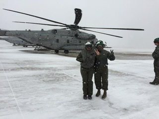
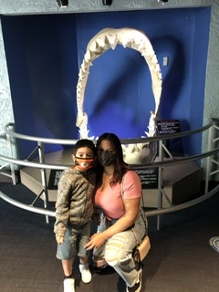
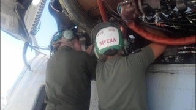
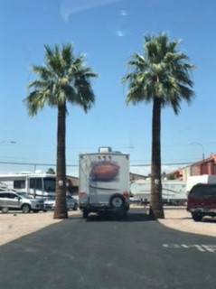

About Me
   I was born and raised in New York. I left for the Marine Corps at the age of 19 and was stationed in MCAS Miramar, San Diego where I worked as an Avionics Technician for CH-53's. While in the Marine Corps I got my CDI qualifiation which basically entails over-seeing aircraft maintenance and lesser qualified Marines on the Aircraft. I left the Marine Corps in 2015 after 5 years.
After leaving the Marine Corps I began working towards my bachelors in Legal Studies. My son was born a year later and I've stayed home with him since. During that time I was able to complete my bachelors and now I'm currently attending this full stack development class where I hope to aquire some pretty handy skills that will make me a valuable employee for future job opportunities. I'm not on a one track path but I have many interests that I've enjoyed learning about to include avionics, law, and now web development. I just recently drove cross country in my RV from New York to San Diego with my husband and son. We've been enjoying San Diego, working, and living the California dream.